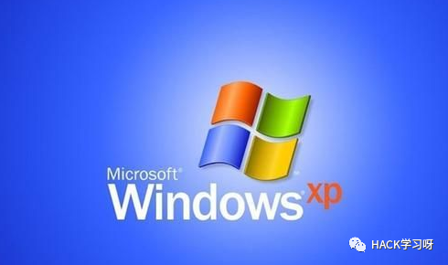
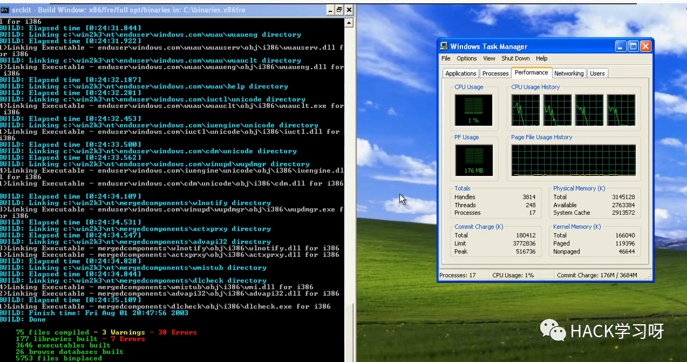
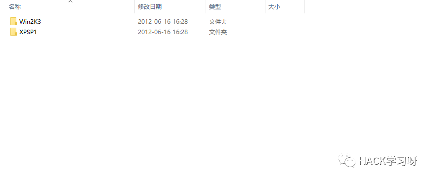
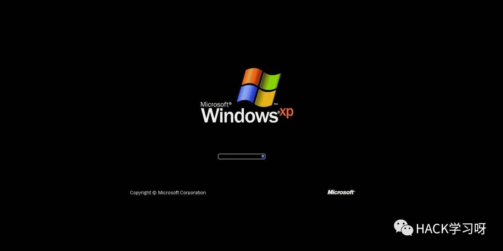
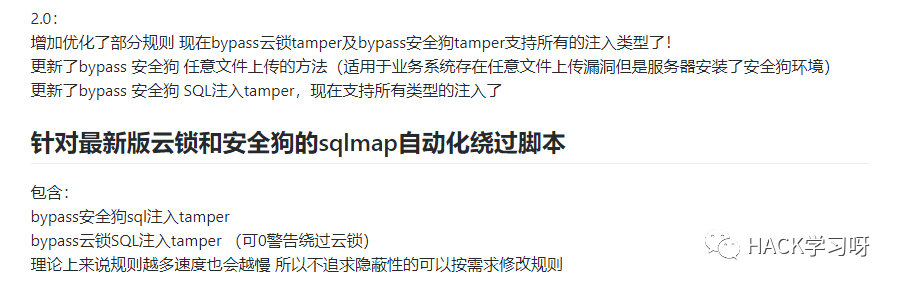

附下载地址 | Windows XP/Windows 2003 源代码
泄露的43G文件中包括Windows XP、Server 2003、MS DOS 3.30、MS DOS 6.0、Windows 2000、Windows CE 3、 Windows CE 4、Windows CE 5、Windows NT 4等。
微软Windows XP、Server 2003等源代码遭大规模泄露，可成功编译Windows,修改替换系统DLL等。

Windows XP源代码泄露事件引发全球关注，目前多方确认这批泄露的源代码属于Windows XP、Server 2003的代码，NDETV甚至借此编译出了可以运行的操作系统。如此一来，Windows XP源代码泄露将会打来巨大的安全隐患，这让黑客掌握其底层运行情况。
通过这批代码，爱好者和黑客们正对Windows内部底层运作情况加深理解，这或许会成为严重的安全隐患。

代码泄露源头是学术领域，微软从2001年开始就与大学、研究机构、政府等机构共享Windows源码，以多重验证完备性和安全性等。不过反病毒圈倒是看淡后果，强调WinXP用户量已经很少且长期都是脆弱的操作系统，未来也不会有“雪上加霜”的局面出现。

微软Windows XP操作系统早在2014年便已经停止服务，根据最新的数据显示目前在全球仅有不到1.5%的份额。不过需要强调的是，在全球电脑数量如此庞大的技术下，这1.5%仍旧是一笔不小的绝对数量，其影响力还是相对较大的。

感兴趣的可以去研究下，下面是源码地址
下载地址：
链接：
https://pan.baidu.com/s/1hjSqwsz58ubsNSMnxJf_Mg
提取码：0e26
解压密码：hacker1961
彩蛋
安全狗和云锁的自动化绕过脚本---tamper脚本

地址：
https://github.com/pureqh/bypasswaf


点赞，转发，在看
参考来源嘶吼专业版